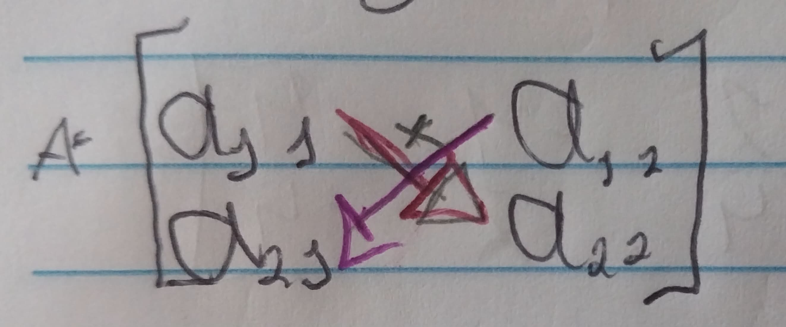
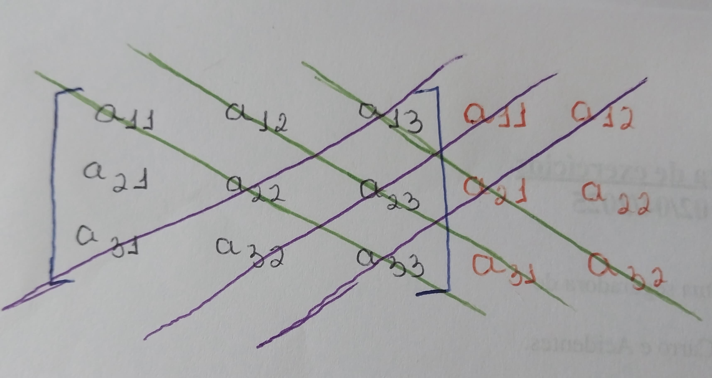
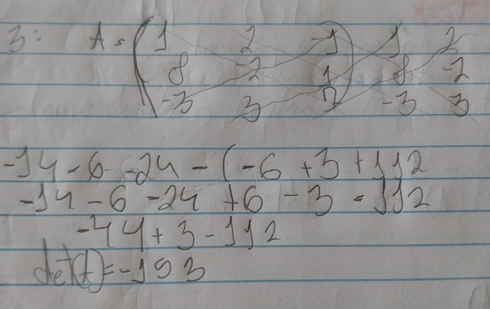
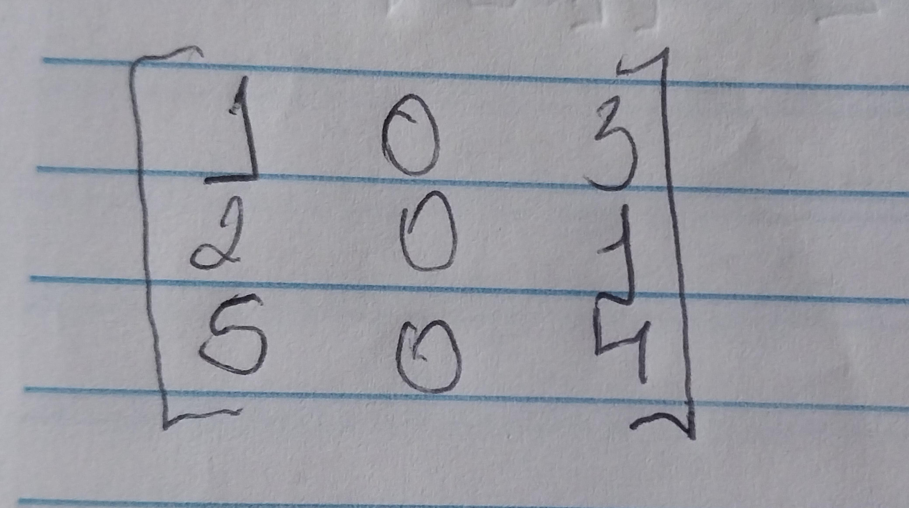
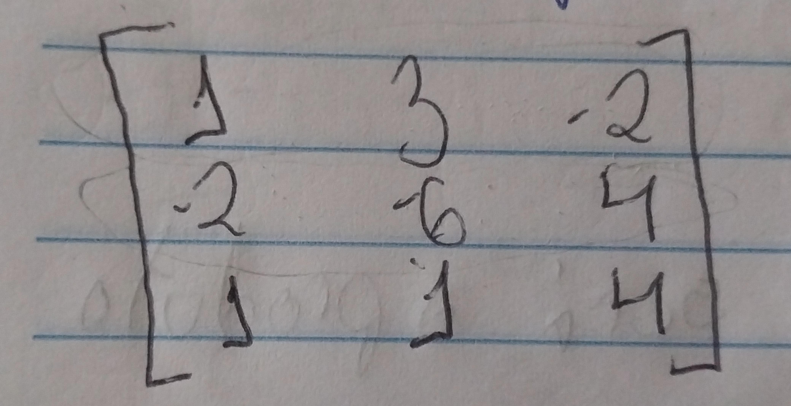
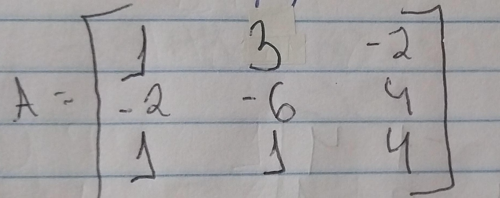
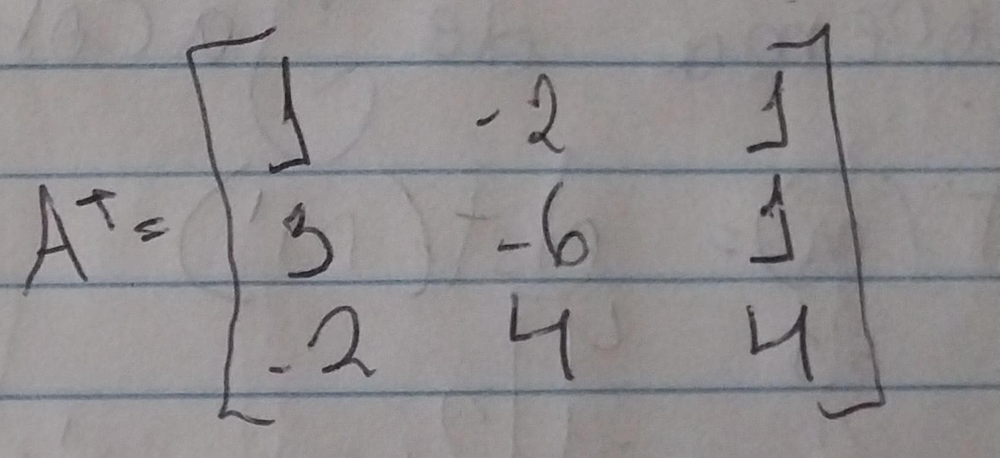
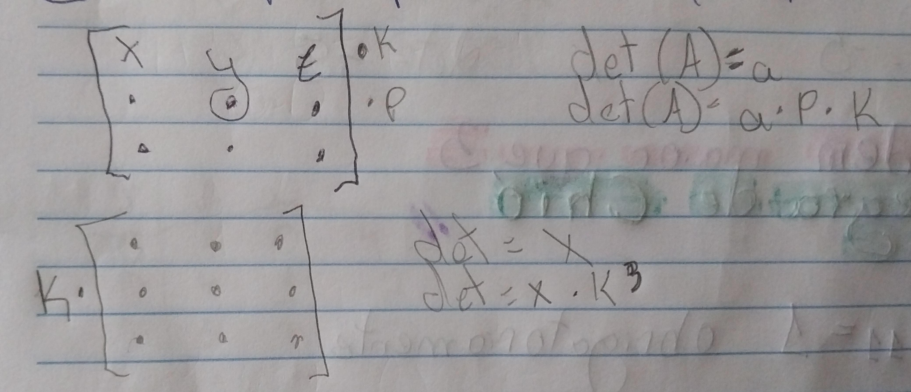
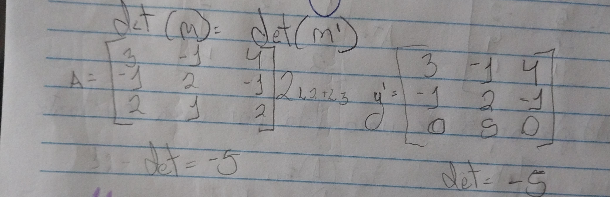
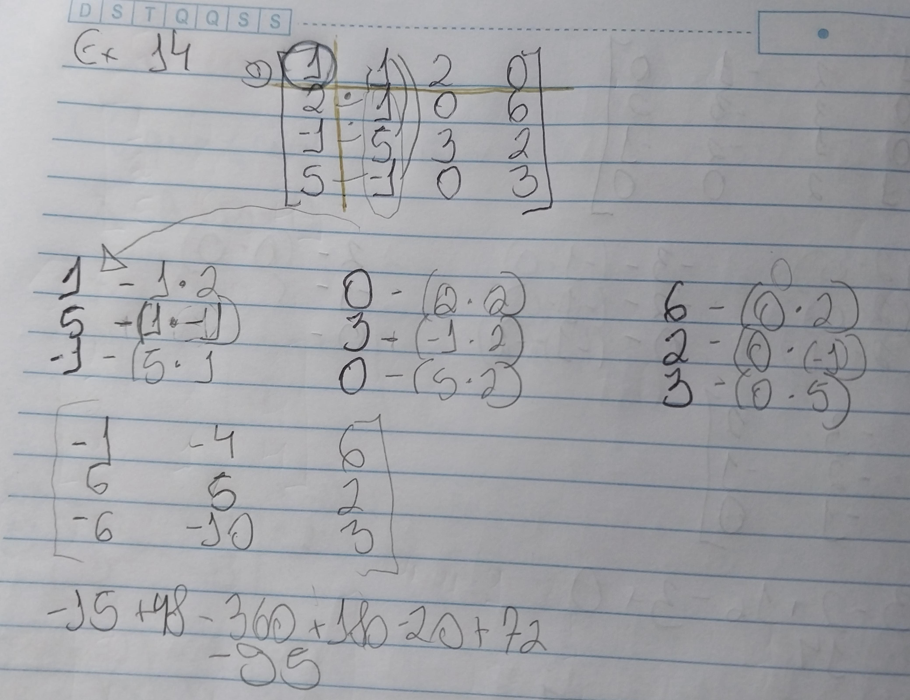

Determinantes
Os determinantes são associados com matriz quadradas.
[A] Matriz
|A| det(A)
Ordem 1
Se A é de ordem 1
A=[-6] det(A)=-6 |A|=-6
Ordem 2
Deve-se multiplicar cruzado
O a11 multiplica o a22(principal)
O a12 multiplica o a21(secundaria)
det(A) = a11 * a22 - a12 * a21
Ordem 3
Os com riscos na cor verde mantem seus sinais, ja os na cor roxo tem o sinal intertido. Ou seja, os da diagonal principal mantem seus sinais, ja os na diagonal secundaria trocam.
Exemplo:
Propriedades dos Determinantes
1° Fila(coluna ou linha) de zeros na matriz, o determinante será zero.
2° Filas paralelas iguais o det(A) = 0
3° Filas paralelas proporcionais o det(A) = 0
Se multiplicarmos a primeira linha por (-2), teremos o resultado igual ao da segunda linha.
4° Matriz Transposta
A matriz transposta é a matriz normal invertida, ou seja, o que estava na linha 1 vai passar a ser coluna 1 e assim por diante.

5° Multiplicação de uma fila por uma constante
5° Troca de filas paralelas
Na troca da posição de duas filas paralelas, o determinante troca o seu sinal.
det(M') = -det(M)
7° Teorema de Binet
det(AB) = det(A) * det(B)
8° Matriz triangular
O determinante será o produto do diagrama principal
9° - Teorema de Jacob
det(M) = det(M')
Neste caso, esta sendo mudado o resultado da linha 3 de forma estratégica.(Irei utilizar L2 pra linha 2 e L3 pra linha 3)
L3 = 2 L2 * L3
L3 = (-2 4 -2) * 2 1 2
L3 = 0 5 0
Ordem maior que 3
Regra de Chió
Nessa regra o a11 tem que ser obrigatoriamente igual a 1.
Voce pega os elementros a22, a 32 e a42. Pega o a22 e subtrai pelo o a12*a21, o que resultará no elementro a11 da nova matriz. O a32-a12*a31 que será o a12 da nova matriz. O a42 - a12*41 que será o a31.
Agora você pega os elementros a23, a33, a43 e faz os mesmos procedimentos so que o que antes voce usava a12 agora é a13. Na outra colunas que faltou é a mesma coisa.